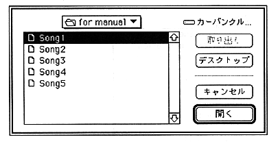
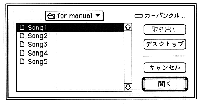

Add the song name to the collect list here. Select the song name you want to add, and the song name will be added to the end of the collect list.
Delete
Select a song name from the collect list and click Delete to delete the song name from the list.
Insert
Selecting Insert opens the following dialog box.

Now insert the song name into the collect list. Click in the collect list where you want to insert it, and then select the song name. The song name selected here is inserted immediately before the song name selected in the collect list.
Exec
Specify the name of the song (standard MIDI file) to be converted and click Exec to start the converter and output a Saturn compressed format file. The output file format and compression mode can be specified with "Converter Configuration" in the option menu. The final output file is output with the specified file name with the extension ".CNV".